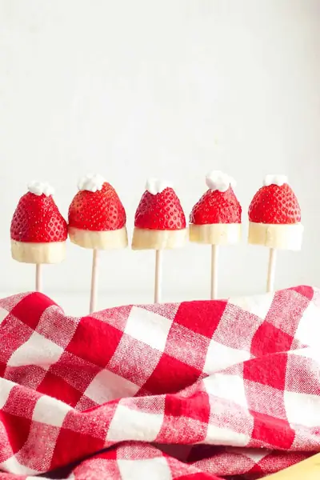

Strawberry Santa Hats

Ingredients
- 20 strawberries
- 2 bananas (cut into 20 pieces)
- 1/4 cup whipped cream
Steps
- Cut the leaves off the top of the strawberries in an even line.
- Stack one strawberry on top of a banana slice, then stick a sucker stick through the bottom to hold them in place.
- Top each strawberry with a small dollop of whipped cream.
Recipe by Anjali Shah · The Picky Eater, from The Picky Eater. Saved here for personal use; the original has the full notes, tips and photos. Open original